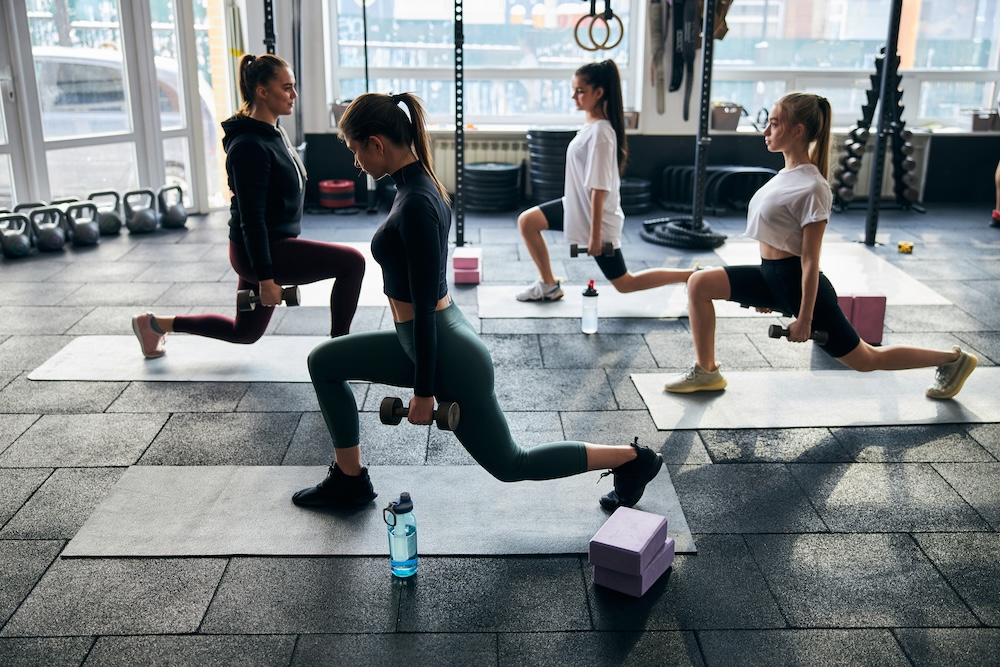
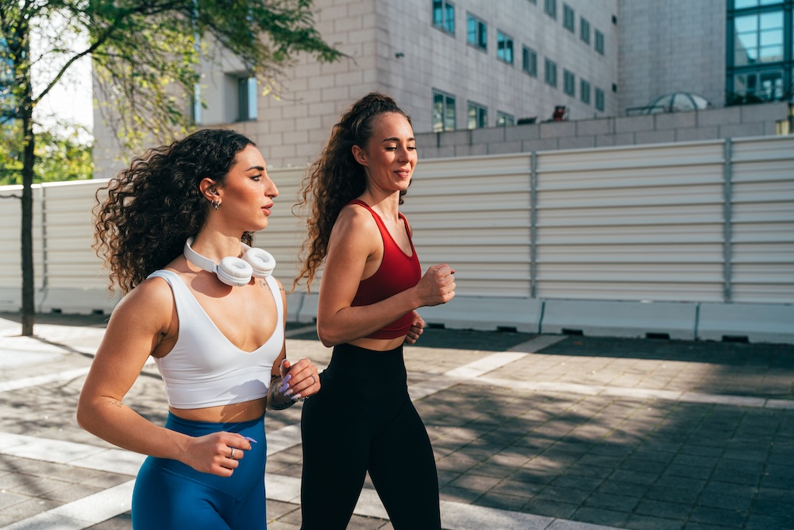

Losing the weight often takes months of discipline.
But for many women, the real challenge begins after the weight is gone.
Because once the goal is reached, a new question quietly appears: How do I make sure it stays this way? Metabolism can slow after weight loss, hunger hormones can shift, and old habits can slowly creep back in.
That's why in 2026, more women are focusing less on extreme dieting and more on simple daily habits that make maintaining results feel easier and more sustainable.
Here are five habits many women are adopting to help keep the weight off long-term.
1. Supporting Appetite Signals
One of the biggest surprises after weight loss is that hunger doesn't always stay lower. In fact, the body often increases hunger signals in an attempt to regain lost weight.
That's why many women are looking for ways to support the body's natural appetite-regulation hormones.
One option gaining attention is Wildtype GLP-1 Support, a supplement designed to help support the body's natural GLP-1 response. GLP-1 is a hormone involved in appetite control and feelings of fullness after eating.

Rather than focusing on aggressive dieting again, many women are simply looking for ways to make maintenance feel more manageable day to day.
2. Strength Training a Few Times Per Week
Cardio can help with weight loss, but strength training is increasingly seen as the key to keeping the weight off.
Building and maintaining muscle helps support metabolism, which can naturally decline after losing weight.
Even two or three strength workouts per week can help women maintain muscle mass and support long-term body composition.

3. Walking More Throughout the Day
One habit that's become surprisingly popular is simply walking more.
Instead of relying only on intense workouts, many women are focusing on daily movement like:
- Morning walks
- Walking after meals
- Taking phone calls while walking
- Short evening walks
This type of low-stress activity helps increase overall energy expenditure without putting excessive stress on the body.

4. Prioritizing Protein at Meals
Women maintaining weight loss are often shifting toward protein-focused meals.
Protein helps support muscle, improves satiety, and can make it easier to avoid constant snacking throughout the day.
Instead of strict dieting, the goal is simply building meals that keep you full longer.
5. Protecting Sleep and Stress Levels
Many people underestimate how strongly sleep and stress affect weight maintenance.
Poor sleep and chronic stress can raise cortisol levels, which may increase cravings and make appetite harder to control.
Good sleep doesn't just improve energy—it can also help the body regulate hunger and metabolism more effectively.
The Bottom Line
For women who have already lost the weight, the goal is no longer drastic change.
It's consistency.
Small, sustainable habits—supporting appetite signals, staying active, eating satisfying meals, and prioritizing recovery—are helping many women maintain their results without feeling like they're constantly dieting.
For women who want extra support with appetite regulation, options like Wildtype GLP-1 Support can fit into a long-term maintenance routine.
And for many, that's the real win: feeling confident that the progress they worked so hard for is here to stay.